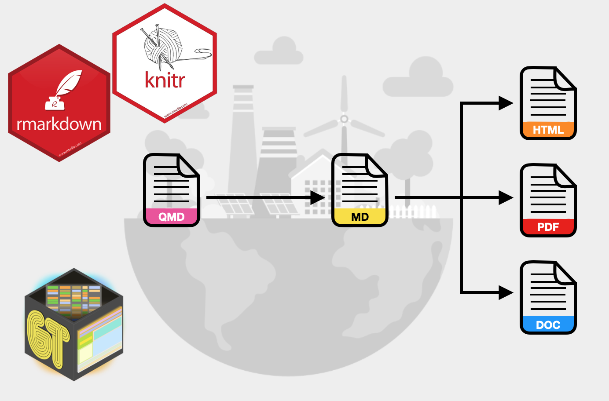

Assignment 01
INTRODUCTION TO QUARTO
The goal of this assignment is twofold: (1) to give you experience using Quarto to integrate analysis and documentation, and (2) to review regression content from EPSY 8251. This assignment is worth 15 points.
Copyright EPSY 8252, 2025
Copyright EPSY 8252, 2025
In this assignment, you will use the data from the file pew.csv to explain variation in Americans’ news knowledge. You will be replicating some of the analyses in the Regression Review Slides.
Instructions
Create a project directory called “assignment-01”. Within this directory, create a QMD document to respond to each of the questions below.
- Your project directory should be well organized (e.g., the BIB and CSL files should be in the
assetsdirectory). - Your project directory should have a README file that is descriptive of the project.
- In the QMD document specify each question number (e.g., “Question 2”) using a level-2 header.
- All codechunks should include a label
#| label:and include comments.
You need to submit a zipped version of your entire assignment-01 project directory. When the TA unzips this and opens your R project file they will render your QMD document. This should produce the HTML file that will be graded. (You can include your HTML file as an extra attachment if you want, but the QMD document will need to render. If it doesn’t render the TA will return it to you to try again.)
- You will receive 1 point for a well-organized project directory, including a README file.
- You will receive 1 point for a QMD file that renders without errors.
Preparation
Include an initial setup code chunk that loads all your libraries and imports the pew.csv data into an object called pew. In this code chunk, also create all three political party dummy variables, namely democrat, independent, and republican. All of the syntax from this code chunk should be hidden, along with any messages or warnings, in your rendered document.
Model 1
Use the
lm()function to fit Model 1 (for RQ1) from the slides. Use thetidy()function from the{broom}package to display the model’s coefficient-level output. Display the syntax for this along with the coefficient-level output in your rendered document.Use a bulleted list to provide an interpretation of the following estimated regression coefficients from the regression you fitted in Question 3: (a) the intercept, (b) the effect of news exposure. Give one interpretation per list item.
Use a display equation to write the equation for the fitted equation based on the output from
lm().(2pts.) Write the following sentence: “The Root Mean Square Error (RMSE; \(\hat\sigma_{\epsilon}\)) is \(x\).” In this sentence, use an inline code chunk to replace \(x\) with the value for the RMSE from the fitted equation. In this code chunk, do not just write in the value for the RMSE, but use syntax to extract the
sigmavalue from theglance()output.Use the
anova()function to obtain the ANOVA decomposition for Model 1. Hide the syntax and only print the results fromanova()in the rendered document.Use the results from Question 7 to compute the model-level \(R^2\) value using the sum-of-squared values. Show your work using a multiline display equation.
Figures and Tables
(2pts.) Recreate the scatterplot from Slide 11. Be sure that the figure includes a caption using the
#| fig-cap:code chunk option. Also include alterenative text for a screen reader using the#| fig-alt:code chunk option. Use the#| fig-align:chunk option to center the plot in the rendered document. Adjust the aspect ratio of the plot using the#| fig-width:and#| fig-height:code chunk options so that it looks good. Lastly, change the values of#| out-width:and/or#| out-height:to change the default size of the plot.(2pts.) Use
gt()functions to recreate Table 1 from Slide 34. (The syntax below will compute summary statistics for you and output them in a data frame.) Numerical output should be rounded to the same number of decimal places as in the slides. Be sure to include the caption. (Note the caption does not have to follow APA formatting.) Add the table note. Do not display any syntax in the rendered document.
tab_01 = pew |>
select(-id, -party) |>
summarize(across(.cols = everything(), .fns = list(Mean = ~ mean(., na.rm = TRUE), SD = ~sd(., na.rm = TRUE),
Min = ~min(., na.rm = TRUE), Max = ~max(., na.rm = TRUE)))) |>
pivot_longer(
cols = everything(),
names_sep = "_",
names_to = c("attribute", "stat")
) |>
pivot_wider(
id_cols = c(attribute),
names_from = stat,
values_from = value
)Miscellaneous
(2pts.) Write a sentence that includes two references in an inline citation. This should also generate the actual references when you knit your document. One of the two references should be the Fox textbook. The other should be a journal article. You can choose the topic of the sentence and how the two references are used in the citation. (Note the references do not actually have to pertain to what is written in the sentence. This is just an exercise in using the bibliography tools in Quarto.) Specify an appropriate CSL file so that the references and citations are in APA format. (If you want to use a citation style that is different from APA, say for a specific journal, use the appropriate CSL file, and indicate that on the assignment.) Both the BIB and CSL files should be included in your project’s
assetsdirectory.Write a sentence that references the figure you created in Question 7 by cross-referencing its label.